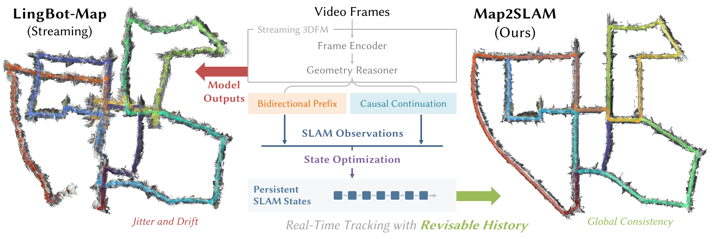
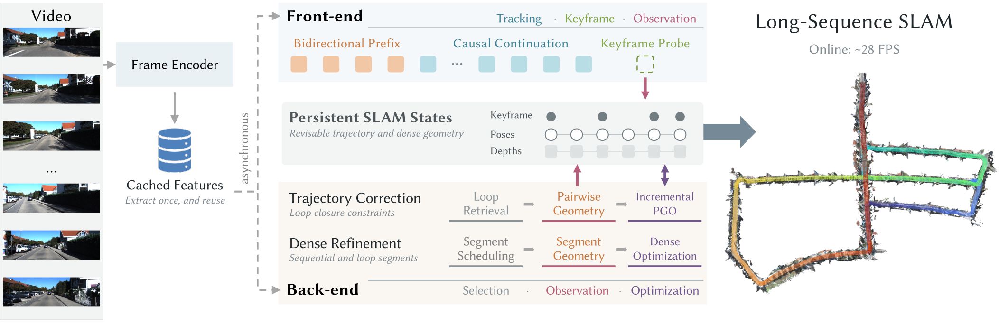
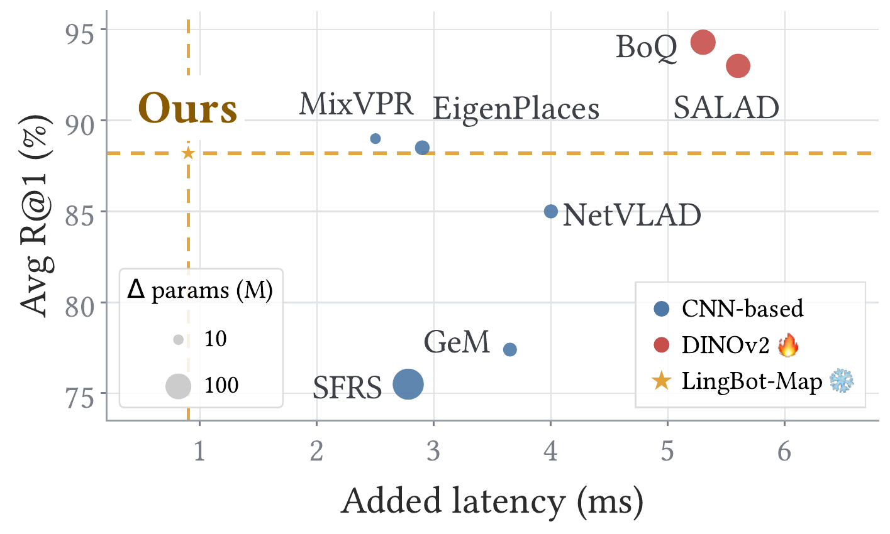
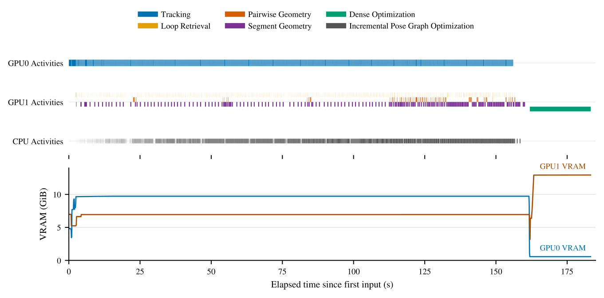

1 Nanjing University2 Robbyant, Ant Group3 HKUST4 Wuhan University5 Zhejiang University
TL;DR Map2SLAM uses a frozen streaming 3D foundation model as a geometry engine, scheduling its causal and bidirectional inference to maintain a persistent, revisable SLAM state.

From Map to SLAM
Map2SLAM keeps LingBot-Map frozen and shares Cached Frame Features across its operations. Initialization uses a Bidirectional Prefix to establish the Live Context; Tracking then follows incoming frames through Causal Continuation, extending the persistent trajectory.
The back end runs Bidirectional Prefix in a Fresh Context using the cached frame features. Loop-Pair Geometry verifies loop candidates and supplies constraints for online trajectory correction. Joint inference over overlapping segments supplies observations for Dense Optimization, which jointly refines keyframe poses and depths after the sequence.
Shown sequentially; the front end and back end run asynchronously.
A strongmodel matters.
So doeshow we use it.
Method
Map2SLAM has one Front-end Tracking path and two Back-end optimization paths. The Front-end produces sequential observations online. Both Back-end paths use fresh Bidirectional Prefix inference on selected historical keyframes to obtain geometric observations. Online Trajectory Correction revises the trajectory during tracking, while Dense Geometric Refinement jointly refines keyframe poses and depths after the sequence.

One Front-end Tracking path and two Back-end optimization paths reuse cached Frame Encoder outputs.
Bounded tracking windows stabilize local motion estimates. Each probe yields pose, depth, and intrinsics; accepted probes commit their KV updates and provide sequential observations, while rejected probes roll back without replay.
Back-end:Online Trajectory Correction
Loop Retrieval · Pairwise Geometry · iPGO
A trained lightweight head maps cached Frame Encoder features to global keyframe descriptors. Descriptor similarity proposes loop candidates; fresh two-view Bidirectional Prefix verifies geometry, and iPGO corrects the trajectory during tracking.
Normalized timeline used only for trajectory inspection. While tracking continues, Map2SLAM (Ours) asynchronously corrects the trajectory using Incremental Pose Graph Optimization (iPGO).
Accuracy & Efficiency
Mean absolute trajectory error after global Sim(3) alignment for uncalibrated methods. Lower is better.
Method
KITTI
VBR
Oxford Spires
LoGeR
25.43
36.18
6.88
LingBot-Map (S)
26.30
26.71
8.14
LingBot-Map (W)
35.54
77.22
15.93
HorizonStream
17.91
18.18
15.66
ABot-Recon
13.56
9.97
5.36
Ours
7.56
5.15
3.07
Mean ATE(m) over 11 KITTI, 7 VBR, and 10 Oxford Spires sequences. Full per-sequence results and calibrated baselines are reported in the manuscript.
Cached-feature loop retrieval
We train a lightweight head to convert cached Frame Encoder features into global descriptors, keeping the encoder frozen. The 1.8M-parameter head adds 0.94 ms per descriptor and reaches 88.2 mean R@1 across MSLS-val, Pitts250k-test, and SPED.

Retrieval accuracy versus added latency.
Runtime profile
The system uses two NVIDIA RTX 5090D GPUs: one runs front-end tracking at over 28 FPS, while the other handles loop closure and bidirectional re-observation. Dense geometric refinement runs after the input sequence.

GPU activity, accepted loops, and memory usage over a KITTI sequence.